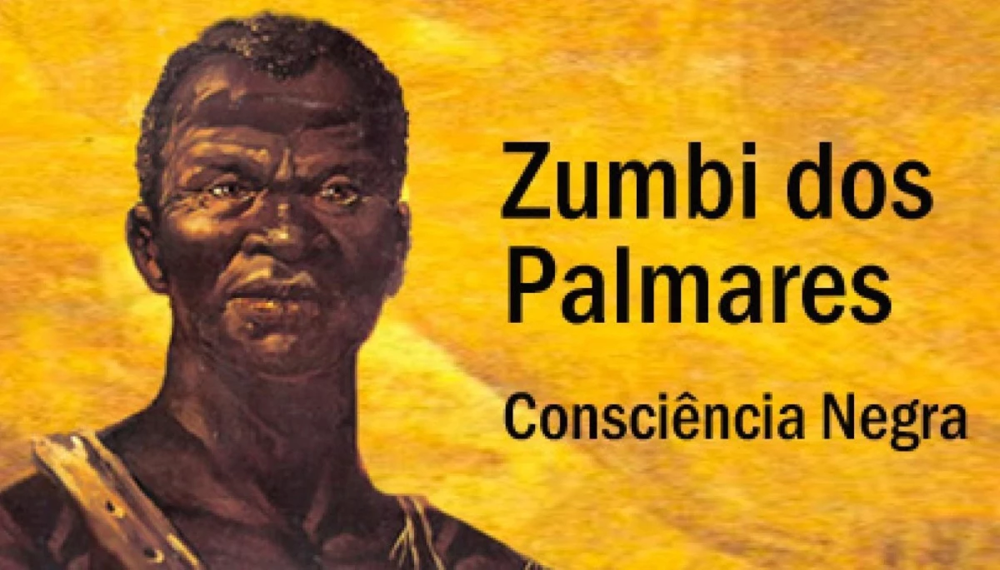

História da Consciência Negra no Brasil
Definição: Data Comemorativa: "O Dia da Consciência Negra, celebrado em 20 de novembro, marca a importância de Zumbi dos Palmares, líder do Quilombo dos Palmares e ícone da resistência contra a escravidão. Zumbi representa a luta pela liberdade e pela justiça, simbolizando a resistência negra durante e após o período de escravidão no Brasil."
Origem: "Em 1971, um grupo de estudantes em Porto Alegre estabeleceu essa data como uma oportunidade para discutir o racismo e promover a igualdade racial. Desde então, essa data tem ganhado cada vez mais espaço e reconhecimento, sendo hoje feriado em muitas cidades e estados do Brasil, onde se realizam eventos de conscientização e celebração da cultura negra."
Relevância Histórica: "A Consciência Negra enfatiza as desigualdades que persistem na sociedade brasileira, mesmo após a abolição da escravidão. Esse movimento chama a atenção para os desafios enfrentados pela população negra em termos de acesso à educação, saúde e oportunidades econômicas, além da importância de preservar a memória e o legado de seus antepassados."
Temas Centrais da Consciência Negra

Temas Centrais da Consciência Negra Racismo e Discriminação: "O racismo estrutural e institucional, presente na sociedade, precisa ser constantemente discutido e combatido. Isso inclui políticas de igualdade racial e esforços para eliminar o preconceito em todos os setores, como mercado de trabalho, educação e justiça social."
Cultura e Identidade: "A população negra contribuiu profundamente para a cultura brasileira, com influências marcantes na música, arte, literatura, culinária e religião. Valorizar essa contribuição é reconhecer que essas influências moldaram nossa identidade cultural."
Educação e Conscientização: "A educação sobre a história negra é crucial para desenvolver a empatia e o respeito. Desde o currículo escolar até o diálogo familiar, é necessário que todos compreendam e respeitem a história da população negra, fortalecendo, assim, uma consciência coletiva de igualdade e justiça."
Grupo responsável
Somos o 3° ano do curso técnico de Analise e Desenvolvimento de Sistemas, para mais informações clique em :
Leia mais